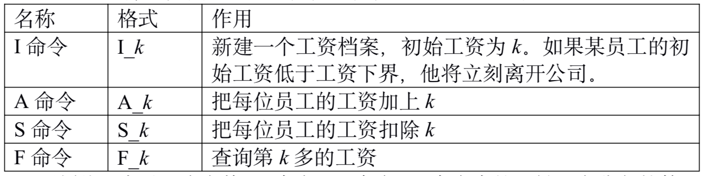

OIER公司是一家大型专业化软件公司，有着数以万计的员工。作为一名出纳员，我的任务之一便是统计每位员工的工资。这本来是一份不错的工作，但是令人郁闷的是，我们的老板反复无常，经常调整员工的工资。如果他心情好，就可能把每位员工的工资加上一个相同的量。反之，如果心情不好，就可能把他们的工资扣除一个相同的量。我真不知道除了调工资他还做什么其它事情。
工资的频繁调整很让员工反感，尤其是集体扣除工资的时候，一旦某位员工发现自己的工资已经低于了合同规定的工资下界，他就会立刻气愤地离开公司，并且再也不会回来了。每位员工的工资下界都是统一规定的。每当一个人离开公司，我就要从电脑中把他的工资档案删去，同样，每当公司招聘了一位新员工，我就得为他新建一个工资档案。
老板经常到我这边来询问工资情况，他并不问具体某位员工的工资情况，而是问现在工资第k多的员工拿多少工资。每当这时，我就不得不对数万个员工进行一次漫长的排序，然后告诉他答案。
好了，现在你已经对我的工作了解不少了。正如你猜的那样，我想请你编一个工资统计程序。怎么样，不是很困难吧？
第一行有两个非负整数n和min。n表示下面有多少条命令，min表示工资下界。
接下来的n行，每行表示一条命令。命令可以是以下四种之一：

_（下划线）表示一个空格，I命令、A命令、S命令中的$k$是一个非负整数，F命令中的$k$是一个正整数。
在初始时，可以认为公司里一个员工也没有。
行数为F命令的条数加一。
对于每条F命令，你的程序要输出一行，仅包含一个整数，为当前工资第$k$多的员工所拿的工资数，如果$k$大于目前员工的数目，则输出-1。
最后一行包含一个整数，为离开公司的员工的总数。
9 10 I 60 I 70 S 50 F 2 I 30 S 15 A 5 F 1 F 2
10 20 -1 2
【评分方法】
对于每个测试点，如果你输出文件的行数不正确，或者输出文件中含有非法字符，得分为0。
否则你的得分按如下方法计算：如果对于所有的F命令，你都输出了正确的答案，并且最后输出的离开公司的人数也是正确的，你将得到10分；如果你只对所有的F命令输出了正确答案，得6分；如果只有离开公司的人数是正确的，得4分；否则得0分。
【约定】
I命令的条数不超过100000A命令和S命令的总条数不超过100F命令的条数不超过100000每次工资调整的调整量不超过1000新员工的工资不超过100000
 Comet OJ
Comet OJ